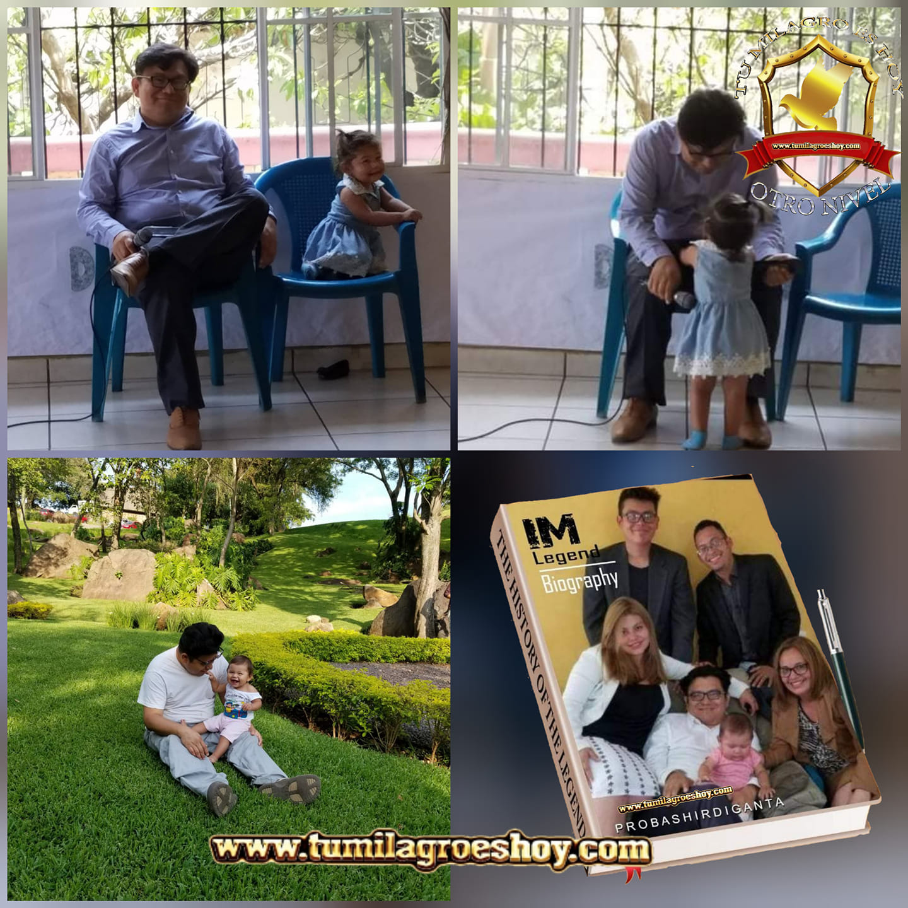

¡Escucha la radio Aqui!
Mision y Vision

Mision
Difundir el mensaje cristiano y servir como una herramienta de evangelización y edificación espiritual. Nuestro objetivo es llevar el mensaje de salvación de Jesucristo a través de las ondas sonoras, guiando a las personas hacia una relación más profunda con Dios.
Vision
convertirse en un faro de luz que irradie el mensaje y el amor de Cristo a nivel global, transformando vidas y promoviendo la unidad entre comunidades cristianas. Buscar ser una referencia en contenido cristiano, llegando al corazón de las personas y marcando una diferencia positiva.